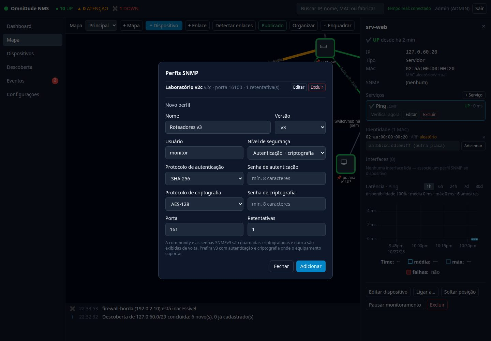
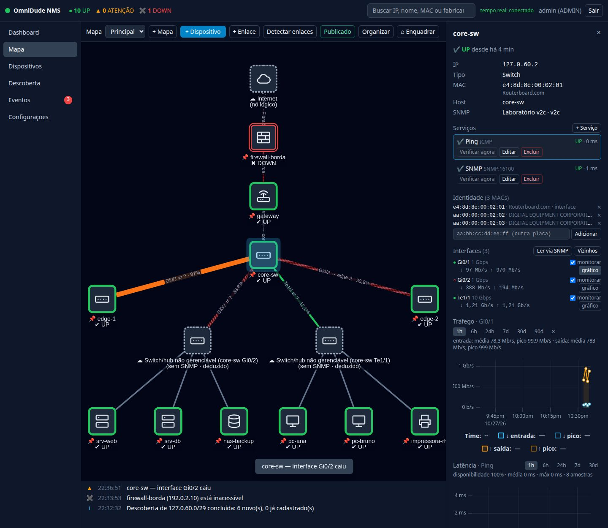
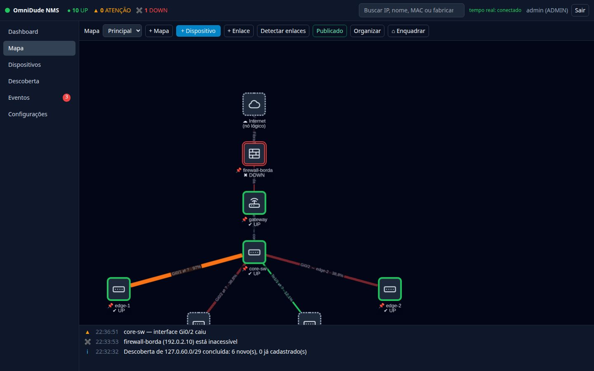

Perfis SNMP#
Um perfil SNMP guarda as credenciais para consultar um equipamento. Vários dispositivos podem compartilhar o mesmo perfil. Abra o gerenciador por Perfis… no formulário do dispositivo (ou, na descoberta, Gerenciar perfis SNMP…).


| Versão | Campos |
|---|---|
| v1 / v2c | community |
| v3 | usuário; nível (noAuthNoPriv, authNoPriv, authPriv); protocolo e senha de autenticação (SHA, SHA-256, SHA-512); protocolo e senha de criptografia (AES-128, AES-192, AES-256) |
Todos têm também porta (padrão 161), timeout e retentativas.
- As senhas SNMPv3 têm no mínimo 8 caracteres (exigência do RFC 3414).
- A community e as senhas ficam cifradas no banco (AES-256-GCM) e nunca voltam pela API. Ao editar um perfil, deixar o campo em branco mantém o segredo atual.
- Onde o equipamento suportar, prefira v3 com
authPriv: v1 e v2c enviam a community em texto claro.
Defina nos equipamentos uma conta SNMP somente leitura. O OmniDude só lê; nunca escreve em equipamentos.
Associar o perfil ao dispositivo#
Escolha o perfil no campo Perfil SNMP do dispositivo (ou deixe a descoberta fazer isso: ela já guarda o perfil que funcionou em cada host). Depois, adicione a checagem SNMP (sysUpTime) se quiser monitorar a disponibilidade do agente.
Ler as interfaces#
No inspetor de um equipamento com perfil, clique em Ler via SNMP. O OmniDude consulta o sistema (sysName, sysDescr, sysObjectID) e a tabela de interfaces, e mostra uma mensagem como “3 interface(s) lida(s), 0 nova(s)”. Isso também:
- atualiza o MAC do equipamento e registra o de cada interface (exceto loopback), que alimentam a identidade;
- atualiza o tipo e o sistema, quando conseguir identificá-los.
A lista mostra, por interface, o nome, a velocidade, o estado operacional (ponto verde = up, vazado = down) e as taxas de entrada (↓) e saída (↑).
Monitorar o tráfego#
Marque monitorar na interface para coletar os contadores dela. Para limitar a carga, o OmniDude faz uma consulta SNMP por dispositivo e ciclo (não uma por interface) e calcula a taxa entre duas leituras consecutivas.


A primeira taxa aparece na segunda leitura (por padrão, cerca de 1 minuto depois). Interfaces importadas pela descoberta já vêm marcadas.
Gráfico de tráfego#
gráfico, ao lado da interface, abre o gráfico Rx/Tx. As linhas cheias são a média do intervalo e as tracejadas, o pico: azul para entrada (↓) e âmbar para saída (↑). A janela vai de 1 h a 90 d. O texto acima do gráfico traz a média e o pico de cada sentido.
- De 1 h a 7 d, os dados vêm das amostras brutas; 30 d e 90 d, do agregado horário (com até cerca de 1 hora de atraso).
- O agregado é gerado de hora em hora e antes da limpeza diária.
Como a taxa é calculada#
- Contadores de 64 bits (
ifHCInOctets/ifHCOutOctets) são preferidos; sem eles (equipamento antigo ou SNMPv1), cai nos de 32 bits. - Reset: um contador de 64 bits que diminui indica reinício do equipamento e não gera taxa.
- Volta (wrap) em 32 bits: a queda é tratada como volta se a taxa couber na velocidade da interface. Intervalos em que o contador poderia ter dado mais de uma volta (um enlace de 1 Gb/s dá a volta em cerca de 34 s) ficam sem taxa em vez de errados.
- Taxa acima da velocidade da interface é descartada.
Em enlaces rápidos, use equipamentos com contadores de 64 bits (ifXTable) para ter taxas confiáveis.
Utilização dos enlaces no mapa#
Quando as duas pontas de um enlace estão ligadas a interfaces monitoradas, o enlace no mapa mostra o tráfego: a espessura e a cor seguem a utilização (o maior sentido sobre a menor velocidade entre as pontas).
| Utilização | Cor |
|---|---|
| Abaixo de 50 % | verde |
| De 50 % a 80 % | âmbar |
| 80 % ou mais | laranja |
Interface down ou ponta DOWN | vermelho pontilhado |
O percentual também aparece no rótulo, para não depender só da cor. Sem leitura recente, o enlace volta ao estilo neutro, nunca a “0 %”.


Eventos de enlace#
Uma interface ligada a um enlace confirmado que cai ou volta gera um evento Enlace caiu ou Enlace voltou. Portas de acesso comuns (sem enlace no mapa) não geram evento, para não inundar a tela.
Vizinhos#
Vizinhos, no inspetor, lê só os anúncios LLDP/CDP/MNDP do equipamento e propõe enlaces. Para varrer tudo de uma vez, use Detectar enlaces (Topologia).